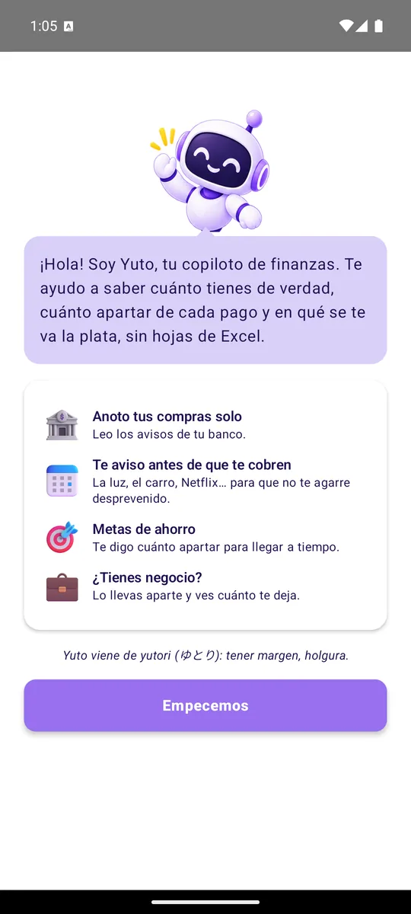
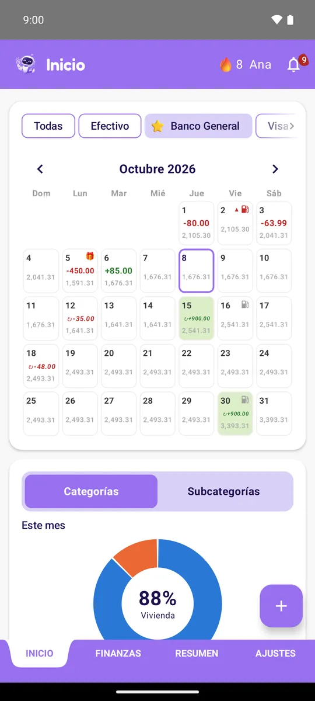
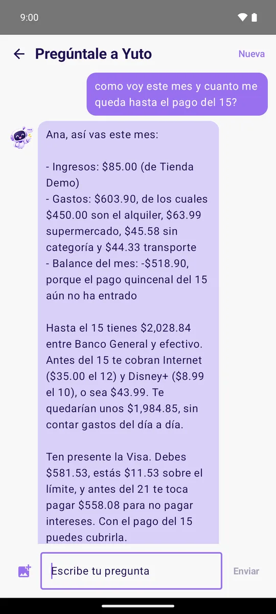
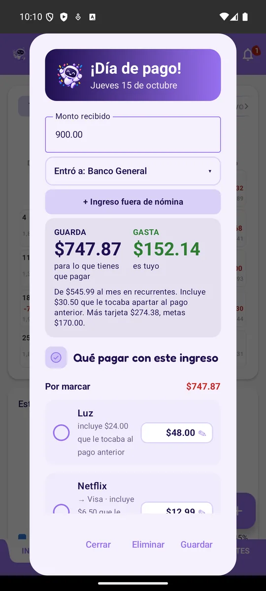
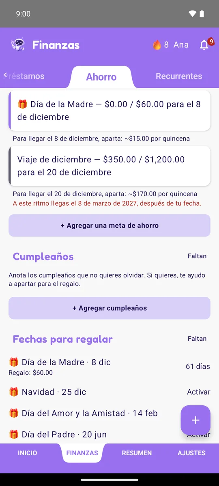
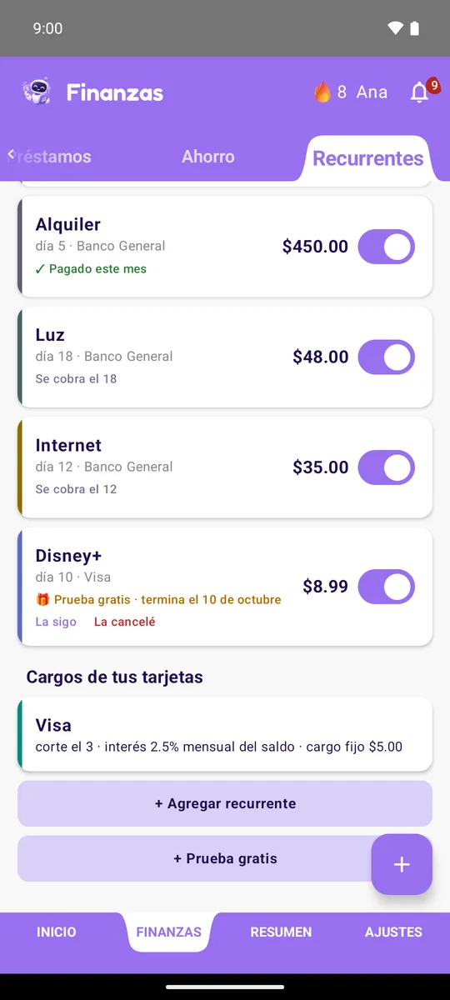
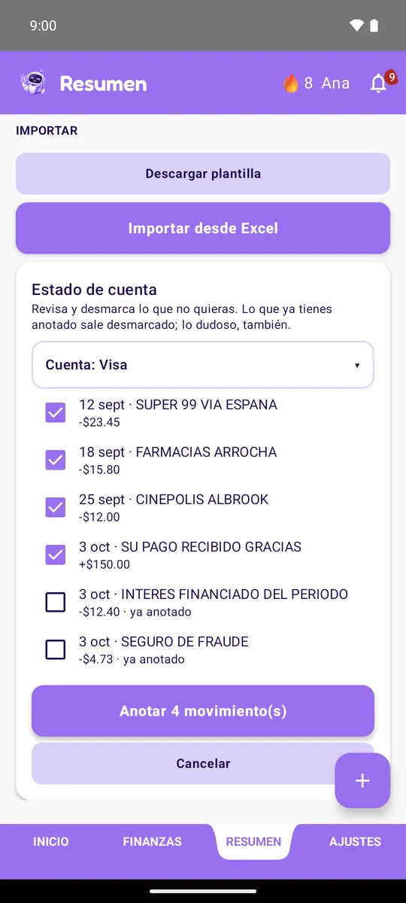
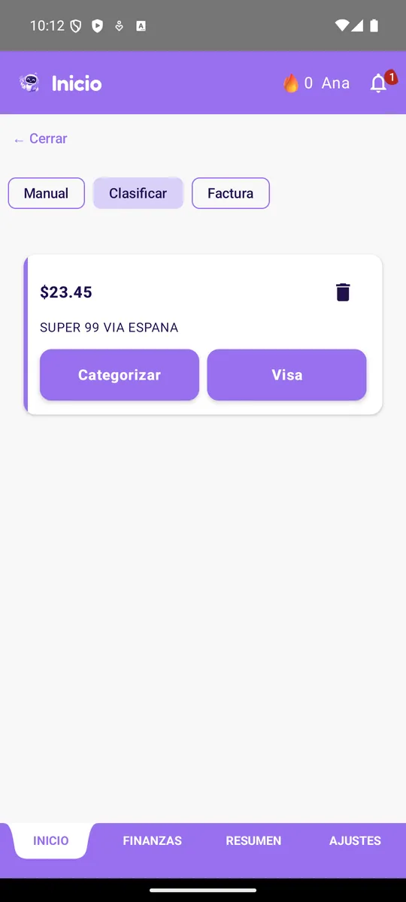

Tu copiloto de finanzas
Yuto anota tus compras solo, te avisa antes de que te cobren y te dice cuánto apartar de cada pago. Para que sepas cuánto tienes de verdad, sin hojas de Excel.
Android 8 o superior · Cómo instalarla
Tú sigues con tu vida. Yuto lleva la cuenta.
Lee los avisos de tu banco y anota cada compra. Los demás avisos (mensajes, redes, correos) los ignora.
¿Pagaste con Yappy o desde tu banca? Toca Compartir en el comprobante, elige Hey Yuto y la app lo lee. Sin capturas.
La luz, el carro, Netflix, las tarjetas: te recuerda el día del cobro, el corte y la fecha de pago.
Cobres por quincena, cada mes, cada dos semanas o sin fecha fija, te dice cuánto guardar para tus compromisos y cuánto te queda libre. Si no cobras lo mismo en cada quincena, reparte según lo que entra en cada una, no mitad y mitad.
Pon para qué ahorras y para cuándo, y Yuto te dice cuánto apartar para llegar a tiempo.
¿El banco te pasa plata cada semana a una cuenta que no puedes tocar hasta noviembre? Márcala como ahorro bloqueado y pon ahí mismo cuánto te pasa el banco: Yuto anota cada depósito solo, no la cuenta como plata disponible y te dice cuánto tendrás al liberarse, con el interés.
¿Empezaste a probar una suscripción? Anótala y te aviso 3 días antes y la víspera del cobro, para que decidas si la sigues o la cancelas.
Lleva lo del negocio aparte de tu plata personal y mira cuánto te deja de verdad cada mes, separando costos y gastos, y cuánto te podrías pagar de sueldo.
Pregúntale con tus palabras: cómo vas este mes, en qué gastaste más o si te alcanza para tu meta. Te contesta con tus números: conoce tus quincenas, tus tarjetas y tus metas, y puedes mandarle una foto del banco o de un cobro. En prueba con un grupo pequeño; pronto para todos.
Agrega tu tarjeta paso a paso. Pon los cargos que te cobra tu banco, cada uno con su ITBMS y si es mensual o una vez al año, el seguro de saldo deudor y la tasa de interés (al mes o al año): en cada corte salen para que los confirmes, y Yuto te avisa si con ellos te pasarías del límite y cuánto pagar para evitar el sobregiro.
¿Tu banco no avisa todo al celular? Importa el PDF del estado de cuenta: Yuto saca los movimientos y tú eliges cuáles anotar. Lo que ya tenías no se repite.
Te dice cómo vas a cerrar el mes en cada categoría y cuándo llegas a tu meta si sigues igual, antes de que sea tarde.
"Avísame si gasto más de $100 en restaurantes" o "si mi cuenta baja de $50". Te llega una notificación.
Anota los cumpleaños, el Día de la Madre, del Padre, Navidad o la fecha que quieras. Yuto te ayuda a apartar para el regalo y te avisa unos días antes.
Pon el widget en tu pantalla y ve cuánto te queda libre hasta tu próximo pago, tus últimos movimientos y lo que falta por cobrarte.
Crea un grupo, comparte solo las cuentas que quieras y hablen de los gastos de la casa en el mismo lugar.








Hey Yuto todavía no está en Play Store: se instala desde aquí, una sola vez. Después las actualizaciones te llegan solas.
Desde el celular, toca Descargar para Android y abre el archivo. Si Android pregunta, deja que el navegador instale apps.
Si aparece Play Protect, elige "Instalar sin analizar". Es normal en apps que no vienen de la tienda.
Abre Hey Yuto, crea tu cuenta y confirma tu correo. Yuto te acompaña a configurar tus cuentas, cómo cobras y tus gastos fijos.
Toca "Dar acceso" y activa Hey Yuto. Si no te deja o sale gris: Ajustes → Aplicaciones → Hey Yuto → ⋮ (arriba a la derecha) → "Permitir ajustes restringidos", y vuelve a intentarlo.
Y si no está aquí, escríbenos.
Solo los avisos de las apps de bancos y billeteras que reconoce: el monto, el comercio y la fecha. Los avisos de cualquier otra app se ignoran: no se leen ni se guardan. Puedes quitar el acceso cuando quieras desde los ajustes del teléfono.
Cada cuenta ve solo sus propios movimientos, salvo las cuentas que decidas compartir en un grupo. Nunca se guarda el número completo de tu tarjeta. Todo está explicado en la política de privacidad.
No le tomes captura: en el comprobante toca Compartir y elige Hey Yuto. La app lee el monto, a quién le pagaste y la fecha, y tú revisas antes de guardar. Si ya lo tenías anotado, te avisa.
Para contestarte usa un resumen de tus finanzas del mes y busca en tus movimientos. La conversación se guarda solo en tu teléfono; nosotros solo contamos cuántas preguntas haces al día. Más detalles en la política de privacidad.
Sí. Si tienes la letra del teléfono grande, la app se acomoda para que todo se lea sin cortarse.
Sí. En Finanzas, deja apretada una cuenta y arrástrala arriba o abajo. Ese orden se usa en toda la app, también en el calendario de Inicio. Lo mismo funciona con tus categorías, tus metas de ahorro y tus gastos fijos.
Sí. Marca esa cuenta como "Ahorro bloqueado" con la fecha en que el banco la libera, y agrega en Recurrentes el "Ahorro automático" que te pasan cada semana o quincena (de tu cuenta o del salario). Yuto lo anota solo, no lo cuenta como plata disponible y te avisa cuando se libera.
Sí: cada cargo con su ITBMS, mensual o anual, y el seguro de saldo deudor como % de lo que debes. En cada corte te los pone para confirmar.
Por ahora solo en Android.
No. Hey Yuto es la misma app con nombre nuevo: entra con el mismo correo y contraseña y todo está ahí. Después puedes desinstalar MoneyLog.
En la app: Ajustes → Cuenta → "Eliminar mi cuenta", o escribiendo a soporte@heyyuto.com. Se borran tu cuenta y todos tus datos.
Déjanos tu correo y te avisamos el día que Hey Yuto salga en la tienda. Solo para eso: nada de publicidad.
Síguenos en Instagram: @heyyutoapp
Escríbenos y te respondemos. Si algo no funciona, cuéntanos qué teléfono tienes y, si puedes, manda una captura.
soporte@heyyuto.com